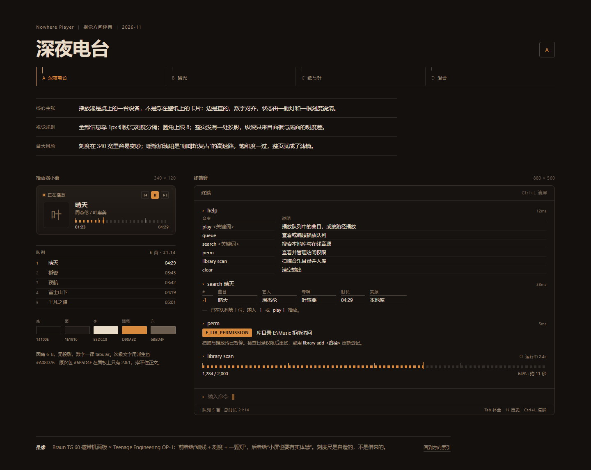
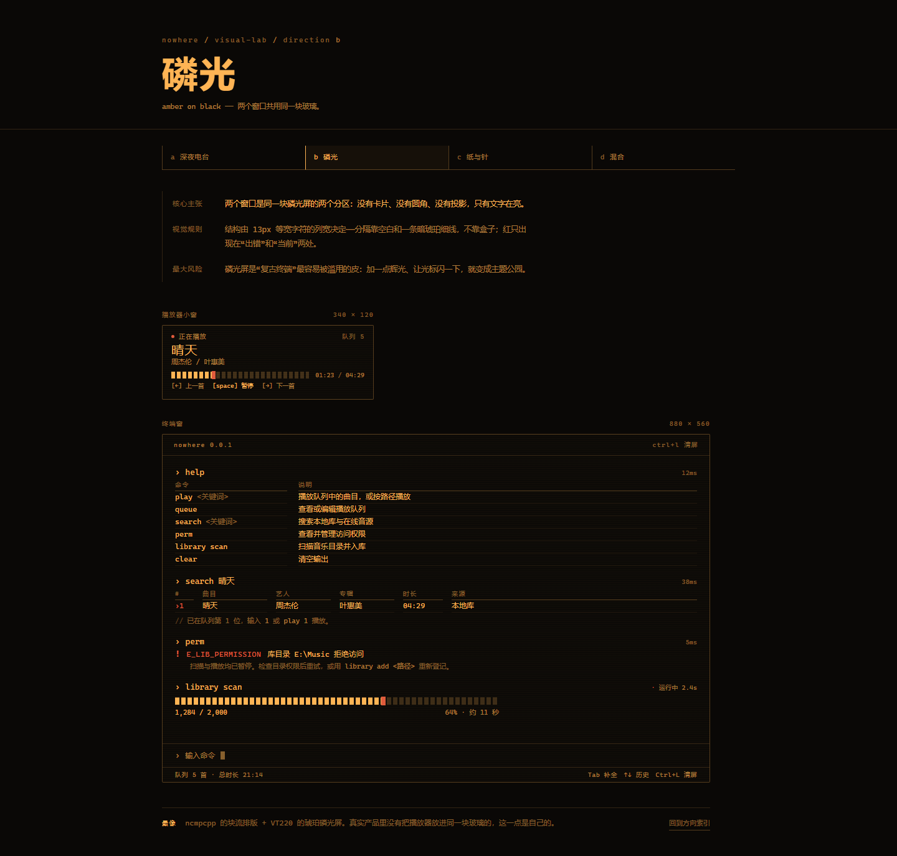
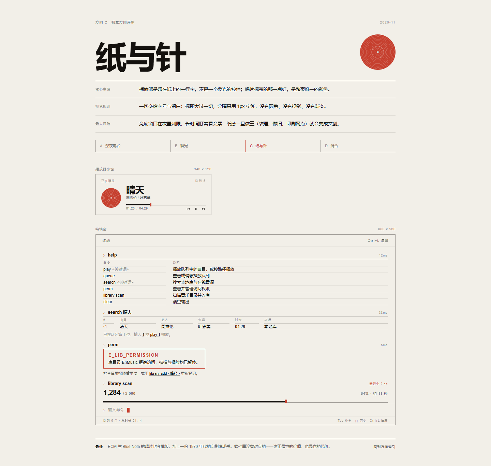
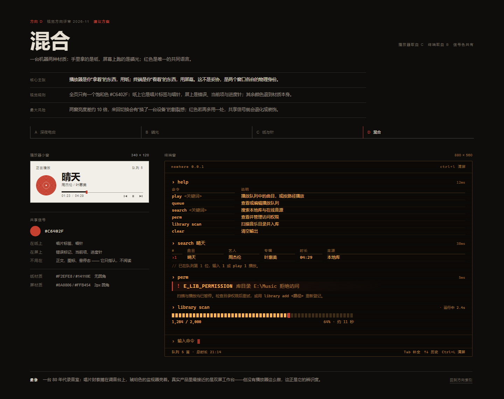

Nowhere Player 视觉方向评审 contact sheet
四方向一览
每格是该页 1440 宽的整页截图，等比缩放到 664 宽显示，未裁切。四页内容高度 1141–1375 不等，所以同一行底部不会齐平——那是页面长度，不是截图误差。




Nowhere Player 视觉方向评审 contact sheet
每格是该页 1440 宽的整页截图，等比缩放到 664 宽显示，未裁切。四页内容高度 1141–1375 不等，所以同一行底部不会齐平——那是页面长度，不是截图误差。



